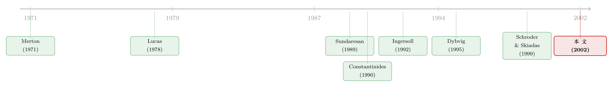

把『习惯』从消费里减掉：一道让难题自动消失的换元术
本文读的是 Schroder & Skiadas (2002, RFS)：他们证明了带「线性习惯形成」的最优消费—投资（或一般均衡）模型，与一个不带习惯形成的模型之间存在一个同构——只要把「消费」重新定义为「当期消费减去一份由过去消费派生出来的虚拟消费」，再把这份虚拟消费正确地定价，带习惯的经济就被机械地变成了一个不带习惯的标准经济。于是 Constantinides (1990)、Ingersoll (1992) 这些原本要靠贝尔曼方程硬解的结果，可以直接从熟悉的 Merton (1971) 解里「抄」出来。
1 一个让人头疼的偏好
先说一件几乎所有学消费资产定价的人都会撞上的尴尬。
教科书里最干净的偏好是可加效用 (time-additive utility)：今天消费多少带来多少效用，和昨天吃了什么、明天打算吃什么都无关。这种「无记忆」的设定让欧拉方程异常漂亮，Merton (1971) 那套连续时间最优组合的解也因此能写成闭式。可它有个出了名的毛病——股权溢价之谜 (equity premium puzzle)：要让模型匹配历史上那么高的股票超额收益，你得把风险厌恶系数调到大得离谱。
于是人们想到给效用「装上记忆」。一个自然的修补是习惯形成 (habit formation)：你今天的幸福感，不取决于消费的绝对水平，而取决于它高出你已经习惯的那条基准线多少。基准线是过去消费的加权平均——也就是一个会随时间「折旧」、又被新消费不断「补货」的存量。Constantinides (1990) 正是用这种习惯，在不离谱的风险厌恶下把股权溢价之谜「解」掉了一大块。（关于把习惯请进生命周期组合的另一支证据，可参见《年轻人为什么不敢买股票？》。）
但代价立刻来了。习惯一旦进场，今天的消费决策会改变明天的基准线，进而改变明天的边际效用——状态变量多了一维，欧拉方程不再自洽，你必须老老实实地写一个带习惯存量的贝尔曼方程，再去解一组耦合的一阶条件。每换一个市场环境（随机利率、随机波动、递归效用……），就得从头再推一遍。Detemple & Zapatero (1991)、Ingersoll (1992) 都是这样一砖一瓦堆出来的。
接着，一个自然的问题是：有没有一种办法，能让带习惯的问题「退化」回那个我们早就解出来的、不带习惯的问题？ 如果有，我们就再也不必为习惯单独解一遍贝尔曼方程了。
这篇 2002 年的 RFS 论文给出的回答是：有，而且这个办法简单得让人有点不敢相信。
2 真正关键的一步：习惯不是新偏好，而是一次「换元」
Schroder 和 Skiadas 的核心洞见只有一句话——
线性习惯形成，本质上不是一种新的偏好，而是对「什么算消费」的一次重新定义。
让我把这句话拆开。带习惯的效用写成 \(U(c) = \hat U(\hat c)\)，其中 \(c\) 是真实的消费计划，而 \(\hat c\) 是「习惯调整后」的消费：
$$ \hat c_t = c_t - b\,x_t, \qquad x_t = \int_0^t e^{-a(t-s)} c_s\,ds + e^{-at} x_0 . $$
这里 \(x_t\) 就是习惯存量 (habit stock)：它以比率 \(a\) 折旧，被当期消费 \(c\) 以满额补货——等价地，\(x\) 满足 \(dx_t = (c_t - a x_t)\,dt\)。参数 \(b>0\) 对应习惯形成（你被过去惯坏了，基准线要从消费里扣掉），\(b<0\) 则对应消费耐用性 (durability)（过去买的耐用品今天还在提供服务）。
关键在于：\(\hat U\) 本身可以是任何「无记忆」的效用——可加的，或者 Duffie & Epstein (1992) 那种递归效用 (recursive / stochastic differential utility)。也就是说，带习惯的 \(U\)，不过是把一个干净的 \(\hat U\) 套在了「\(c \mapsto \hat c\)」这个线性变换外面。
于是 Schroder–Skiadas 的策略呼之欲出：既然 \(U(c)=\hat U(\hat c)\)，那我能不能干脆让 \(\hat c\) 去当主角？把原来那个以 \(c\) 为决策变量、带习惯的经济（称为 primal），换成一个以 \(\hat c\) 为决策变量、效用是干净的 \(\hat U\)、因而根本没有习惯的经济（称为 dual）。
听上去像偷换概念。但有一个障碍必须先搬开：\(c\) 和 \(\hat c\) 不是同一个东西，它们的预算约束也不一样——在 primal 市场里花一块钱买 \(c\)，和在某个市场里花一块钱买 \(\hat c\)，对应的现值并不相等。要让这个「换元」站得住，你必须为那份虚拟消费 \(-bx\) 配一套正确的价格，使得两边的预算约束严丝合缝地对上。这套价格，就是论文真正的技术内核。
3 模型：把对偶市场一步步「造」出来
论文主体放在一般信息流（不必是布朗运动，可含跳跃）下的完备 Arrow–Debreu 市场里，这让结论的「价格动态无关性」一览无余。我按论文的顺序，把这台机器一格一格搭起来。
第一步：消费的对偶。 在一般（可随机、随时间变化的）参数 \((a,b)\) 下，定义对偶消费
$$ \hat c_t = c_t - b_t\, x_t(c), \qquad x_t(c) = \int_0^t e^{-\int_s^t a_u\,du} c_s\,ds + e^{-\int_0^t a_u\,du} x_0 . \tag{1} $$
这就是论文的方程 (1)。它最核心的部分，是把「真实消费」和「虚拟消费」掰开的那一步——我用一个带旁注的式子把它讲清楚：
第二步：参数也有对偶，而且对称。 引入对偶参数
$$ \hat a = a - b, \qquad \hat b = -b . $$
注意这组映射是对合 (involution) 的：对 \((\hat a,\hat b)\) 再取一次对偶，\(\widehat{\hat a}=\hat a-\hat b=(a-b)-(-b)=a\)，\(\widehat{\hat b}=-\hat b=b\)，正好转回 \((a,b)\)。这意味着 primal 与 dual 的地位完全对称，谁是「带习惯」的那个、谁是「没习惯」的那个，只是叙述的约定而已。论文的 Proposition 1 把这种对称写到了底：
$$ x(c) = \hat x(\hat c). \tag{Prop 1} $$
习惯存量在两个经济里是同一个过程。 这是整篇文章反复要用的支点——你换了消费的定义、换了参数，可那个会折旧、会补货的「存量」纹丝不动。直觉上也对：\(x\) 只是「过去消费的折旧累积」这件事的记账，而记的是同一段历史。
第三步：给虚拟消费定价，造出对偶状态价格。 这是真正关键的一步。先定义辅助过程
$$ h_t = e^{-\int_0^t (a_u - b_u)\,du}, \qquad \nu_t = \frac{1}{\pi_t h_t}\, E_t\!\left[\int_t^T \pi_s\, b_s\, h_s\,ds\right]. $$
\(\nu_t h_t\) 可以读成「一张分红率为 \(bh\)、到期无残值的统债 (consol) 在 \(t\) 时刻的价格」——换句话说，\(\nu_t\) 度量的正是「未来全部虚拟消费」折算到今天值多少。有了它，对偶状态价格密度就被定义为
$$ \hat\pi_t = \pi_t\,(1+\nu_t). \tag{3} $$
直觉很美：dual 市场里一单位「干净消费」的价格，等于 primal 市场里那一单位消费的价格 \(\pi_t\)，再乘上一个因子 \((1+\nu_t)\) 来把习惯的影子价格吸收进去。论文要求 \(\hat\pi\) 仍是合法的状态价格密度（严格为正），这等价于处处 \(\nu_t > -1\)——只要 \(b>0\) 就自动成立。
这里同样有对称性。定义对偶侧的 \(\hat h,\hat\nu\)，Proposition 2 给出
$$ (1+\nu_t)(1+\hat\nu_t) = 1 \;\Longrightarrow\; \pi_t = \hat\pi_t\,(1+\hat\nu_t), $$
于是方程 (3) 可以反着写回去——这再次说明两个市场地位平等。
第四步：财富也对上了。 把 \(x(c)\) 当作计价单位，「习惯存量 + 未来补货的现值」在两个经济里相等。这就是 Proposition 3：
$$ \pi\big[x(c) + W(c)\big] = \hat\pi\big[\hat x(\hat c) + \hat W(\hat c)\big]. \tag{Prop 3} $$
最后，反转出现——最优性被完整地搬运了过去。 有了 Proposition 3，预算约束的等价立刻掉出来。论文的 Theorem 1 证明短到只有几行，我把它原样走一遍，因为它把「为什么这个换元是合法的」讲得最透：
对任意消费计划 \(c\)，由 Proposition 3 在 \(0\) 时刻取值，得到 $$ \langle \pi, c\rangle + \pi_0 x_0 = \langle \hat\pi, \hat c\rangle + \hat\pi_0 x_0, $$ 对禀赋 \(e\) 也有同样一式 $$ \langle \pi, e\rangle + \pi_0 x_0 = \langle \hat\pi, \hat e\rangle + \hat\pi_0 x_0. $$ 两式相减，那个碍事的 \(\pi_0 x_0\) 与 \(\hat\pi_0 x_0\) 一起消掉，剩下 $$ \langle \hat\pi,\ \hat c - \hat e\rangle = \langle \pi,\ c - e\rangle . $$ 这说明：\(c\) 在 primal 预算下可行，当且仅当 \(\hat c\) 在 dual 预算下可行。再加上 \(U(c)=\hat U(\hat c)\)，可行域和目标函数双双对齐——
Theorem 1. \(c\) 对 primal 代理 \((U,e)\) 在状态价格 \(\pi\) 下最优，当且仅当 \(\hat c\) 对 dual 代理 \((\hat U,\hat e)\) 在 \(\hat\pi\) 下最优。
至此，整套机械流程清清楚楚：要解带习惯的 primal 问题，就去解那个没有习惯、你早已会解的 dual 问题，拿到最优 \(\hat c\)，再令 \(c = \hat c - \hat b\,\hat x(\hat c) = \hat c + b\,\hat x(\hat c)\) 折回来。论文还顺手给出消费—财富比的转换式（方程 4a）：
$$ \frac{c_t}{W_t(c)} = \frac{\hat c_t}{\hat W_t(\hat c)}\cdot \frac{1 - \nu_t z_t(c)}{1+\nu_t} + b\, z_t(c), \qquad z_t(c) = \frac{x_t(c)}{W_t(c)} . \tag{4a} $$
由于映射对消费是线性的，单个代理的对偶立刻推广到一般均衡：只要所有代理共享同一组习惯参数 \((a,b)\)，Theorem 2 就保证 primal 与 dual 经济的 Arrow–Debreu 均衡一一对应。Constantinides (1990) 那个常数投资机会、无限期的设定，恰好是 \(\nu\) 退化为确定性常数、\(\delta\) 消失的特例——此时两个经济的全部证券价格完全相同，带习惯的经济竟然同构于一个换了禀赋过程的 Lucas (1978) 型经济。
顺带一提利率的对偶（Proposition 4）：\(\pi_t(a_t+r_t)=\hat\pi_t(\hat a_t+\hat r_t)\)。论文给了一个绝妙的解读——把习惯存量看成一种可买可租的耐用品，\(a+r\) 正是它的「租金率」（租比买省下折旧 \(a\) 与融资 \(r\) 两项成本）。Proposition 4 不过是在说：既然习惯存量是两个经济共有的，它的租金价格自然也共有。
4 这台机器能产出什么
讲到这里，一个很实在的问题是：换元术再漂亮，能不能真的省事、甚至产出新东西？论文给了三组答案。
其一，旧结果的「免费重证」。 把熟悉的 Merton (1971) 可加效用解（或 Karatzas–Lehoczky–Shreve (1987)、Cox–Huang (1989) 的鞅方法解）丢进对偶机器，不碰任何贝尔曼方程、不写一条一阶条件，就能机械地得到 Constantinides (1990) 与 Ingersoll (1992) 的习惯/耐用品解。原来要单独啃下来的两篇文章，在这个框架里成了一道代入题。
其二，真正的新解。 把 dual 那一侧换成 Schroder & Skiadas (1997, 1999) 给出的随机微分效用解——那是一类推广了可加 HARA、相当于 Epstein–Zin (1989) 连续时间版本的同质递归设定——再用本文公式折回 primal，就得到了一个「递归效用 + 习惯项」叠加、且投资机会集随机的最优消费—组合策略。这是此前文献没有的。（对「把动态组合解成会做回归的方程」这一脉的感觉，可参见《把投资组合的「天书」解到只剩一个常微分方程》。）
其三，一个意料之外的等价。 同样的逻辑搬到 Hindy–Huang–Kreps (1992) 那种对累积消费定义的偏好上，dual 代理的效用就落在「消费率」上。此时 Hindy & Huang (1993) 里「消费非负」的约束，经对偶翻译成了「消费率下降速度不能超过某常数」——而这恰恰是 Dybvig (1995) 研究「消费棘轮 (ratcheting)、不容忍生活水平任何下降」时所用的约束。于是本文证明：Dybvig (1995) 解决的问题，同构于 Hindy & Huang (1993) 解决的问题，两者的解可以互相机械转换。两篇看似风马牛不相及的论文，被一道换元缝在了一起。
唯一的硬边界，论文自己也讲得很诚实：整套方法死死依赖习惯过程的线性。Detemple & Zapatero (1991)、Haug (1998) 那种非线性习惯（比如效用依赖 \(c/x\) 的比值而非 \(c-bx\) 的差），不在此框架之内。
5 文献脉络
把这条线索捋一遍，会发现它其实是两股河流的交汇。
一股是最优消费—组合的主干：Merton (1971) 奠定连续时间框架，Lucas (1978) 给出交换经济的均衡定价语言，二者构成了「不带习惯、我们早就会解」的那一侧。另一股是带记忆偏好的探索：Sundaresan (1989) 提出跨期依赖偏好与消费/财富波动，Constantinides (1990) 用习惯形成正面硬刚股权溢价之谜，Ingersoll (1992)、Detemple & Zapatero (1991) 继续把习惯/耐用品塞进各类组合问题——但每一步都付出了「单独解贝尔曼方程」的代价。与此同时，Hindy & Huang (1993) 与 Dybvig (1995) 在「局部替代」和「消费棘轮」这条岔路上各自前行，彼此并不知道对方其实在解同一道题。

Schroder & Skiadas (2002) 所做的，不是再添一块砖，而是退后一步指出这些砖本可以不必单独烧制：它们都能从既有的无习惯解里换元得到。配合作者自己 1999 年关于随机微分效用的解，这个同构既统一了旧结果，又长出了新结果。它在脉络里的位置，更像一台「编译器」而非又一个「模型」。
评论与延伸（Q&A + 研究方向）
(a) 几个可能的疑问
Q：这和经济学里常见的「变量替换」有什么不同，凭什么值一篇 RFS？
难点从来不在「把 \(c\) 换成 \(\hat c\)」这一步，而在于换元后预算约束会错位——\(\hat c\) 在哪个市场、用什么状态价格才可行，并不显然。论文真正的贡献是构造出对偶状态价格 \(\hat\pi=\pi(1+\nu)\)，让两边的可行域精确重合（Theorem 1）。没有这套定价，换元只是符号游戏。
Q：它和 Detemple–Zapatero 那类「用一阶条件导出影子价格」的做法，区别在哪？
论文在脚注里专门点了这件事：那些文献里类似 \(\nu\) 的量，是从某个特定效用的最优性一阶条件里推出来的，因而绑死在那个效用形式上（比如换成递归效用就失效）。而本文的变换与最优性、与效用形式完全无关——它只是消费的重新定义，所以才能套用到递归效用乃至 Hindy–Huang 偏好上。
Q：要求「所有代理共享同一组习惯参数 \((a,b)\)」是不是太强了？
对均衡结论（Theorem 2）确实是必要的：只有 \((a,b)\) 共同，消费到对偶的线性映射才对所有人一致，加总才不串味。但对单个代理的需求问题没有这个限制——它对任意 \((U,e)\) 都成立。所以异质习惯下，你仍可用它解每个人的最优策略，只是不能直接拼出共享对偶经济的均衡。
Q：\(b<0\)（耐用品）和 \(b>0\)（习惯）真的能用同一套公式吗？
能，这正是框架优雅的地方：\(b\) 的符号只决定 \(\hat a=a-b\) 与 \(\hat\pi\) 里那个 \((1+\nu)\) 因子是放大还是缩小，证明一字不改。唯一要当心的是合法性条件 \(\nu_t>-1\)——\(b>0\) 时 \(\nu>0\) 自动满足，\(b<0\)（耐用品）时需要额外保证，论文用有界短率把它兜住。
Q：既然 primal 和 dual 完全对称，那「带习惯」和「不带习惯」岂不是没有实质区别？
数学上对称，经济学上不对称。对称说的是「两个模型的解可以互算」，但两个模型描述的偏好是不同的：它们解释数据（比如股权溢价、消费波动）的能力天差地别。同构的价值恰恰在于——你可以保留习惯偏好在解释力上的好处，同时借用无习惯模型在求解上的便利。
Q：它能帮上「习惯解释股权溢价」这件实证大事吗？
间接地能。它本身不产出新的实证数字，但把「带习惯 + 随机投资机会 + 递归效用」这种以前解不动的设定变得可解，等于给实证校准腾出了更大的模型空间——你不再被「只有可加习惯才有闭式」绑住手脚。
(b) 几个可能的研究问题与提案
1. 把同构搬进公司债的「习惯型」信用定价。 【经济故事】结构化信用模型里，违约边界常被设成消费/现金流的固定比例；若投资者有习惯形成，违约的「痛感」应随基准线移动，信用利差的周期性会被放大。本文的换元术或许能把「带习惯的信用定价」折回一个无习惯的标准结构模型。 【可行性】中。理论端 doable——线性习惯 + 完备市场假设与多数简约结构模型兼容；难点在违约这一非线性边界是否破坏线性性，需要小心。实证端可用 TRACE 利差做校准检验。
2. 不完备市场下同构还剩多少？ 【经济故事】论文第 4 节已提示可推广到不完备市场，但完备性是 Theorem 1 干净证明的关键。一个值得做的工作是刻画：当市场不完备、虚拟消费 \(-bx\) 无法被完全对冲时，对偶状态价格的不唯一会以什么形式出现，同构退化成什么。 【可行性】中。纯理论，doable 但技术性强，需要 Cvitanić–Karatzas (1992) 那套凸对偶工具与本文框架对接。
3. 异质习惯下的「外资 vs 本土投资者」定价。 【经济故事】外资与本土投资者的消费基准线（习惯）很可能不同——本土投资者的习惯锚在本国消费，外资锚在母国。Theorem 2 的「共享参数」假设在这里恰好被打破，正好用来研究异质习惯如何在均衡里制造跨投资者的定价楔子。 【可行性】低到中。识别难：习惯参数本身难估，又要按投资者类型分层，数据要求高；但若退而求其次做一个两类代理的理论均衡，doable。
4. 把「消费棘轮 ↔ 局部替代」的等价做成可检验命题。 【经济故事】本文证明 Dybvig (1995) 与 Hindy–Huang (1993) 同构。这意味着「不容忍生活水平下降」与「消费局部可替代」在可观测的消费/组合路径上应留下相同的指纹。能不能用家庭微观消费面板把这个等价证伪或证实？ 【可行性】中。理论命题清晰；实证要区分两种机制对消费下行的约束，需高频家庭消费数据（如扫描仪数据），识别有挑战但方向明确。
我的判断
贡献上，这篇文章的份量不在「又解了一个模型」，而在它揭示了一个结构性事实：线性习惯形成在数学上根本不是一种新偏好，而是消费的一次仿射重定义。一旦接受这一点，过去十几年里一篇篇单独求解的习惯模型，就被收编成同一台对偶机器的不同输入。证明本身（Theorem 1 那几行）短得近乎朴素，但能把问题想到这个抽象层级、并把对偶状态价格 \(\pi(1+\nu)\) 精确构造出来，是真功夫。它和我读过的另一类「把天书化简成可解方程」的工作气质相通——价值在于降维与统一，而非堆砌。
对识别（这里更准确地说是对适用性）的担忧有两点。其一是那条作者自己划下的硬边界：线性。现实中的习惯——以及行为金融里更受关注的损失厌恶式基准——往往是非线性的（依赖 \(c/x\) 而非 \(c-bx\)），这套换元对它们束手无策，而恰恰是非线性那部分藏着最有意思的不对称。其二是完备市场这个脚手架：Theorem 1 证明的干净，相当程度上靠的是「任何消费计划都可交易」，一旦进入不完备或带交易约束的世界，虚拟消费 \(-bx\) 能否被定价、对偶是否唯一，都要重新打问号。
后续最想看到的，是有人把这台编译器真正「跑」在一个实证问题上——比如用它把带习惯的递归效用解直接喂给股权溢价或公司债利差的校准，看看「换元省下来的求解成本」能否换来更大的、可被数据约束的模型空间。理论的优雅已经摆在那里；下一步该问的是，它能不能帮我们把某个一直解不动的实证难题，变成一道代入题。
参考文献
- Constantinides, G. M. (1990). Habit Formation: A Resolution of the Equity Premium Puzzle. Journal of Political Economy 98(3), 519–543.
- Cox, J., and C.-F. Huang (1989). Optimal Consumption and Portfolio Policies When Asset Prices Follow a Diffusion Process. Journal of Economic Theory 49(1), 33–83.
- Detemple, J., and F. Zapatero (1991). Asset Prices in an Exchange Economy with Habit Formation. Econometrica 59(6), 1633–1658.
- Duffie, D., and L. Epstein (1992). Stochastic Differential Utility. Econometrica 60(2), 353–394.
- Dybvig, P. (1995). Dusenberry's Ratcheting of Consumption: Optimal Dynamic Consumption and Investment Given Intolerance for Any Decline in Standard of Living. Review of Economic Studies 62(2), 287–313.
- Epstein, L., and S. Zin (1989). Substitution, Risk Aversion, and the Temporal Behavior of Consumption and Asset Returns: A Theoretical Framework. Econometrica 57(4), 937–969.
- Hindy, A., and C.-F. Huang (1993). Optimal Consumption and Portfolio Rules with Durability and Local Substitution. Econometrica 61(1), 85–121.
- Hindy, A., C.-F. Huang, and D. Kreps (1992). On Intertemporal Preferences with a Continuous Time Dimension: The Case of Certainty. Journal of Mathematical Economics 21(5), 401–440.
- Ingersoll, J. E., Jr. (1992). Optimal Consumption and Portfolio Rules with Intertemporally Dependent Utility of Consumption. Journal of Economic Dynamics and Control 16(3–4), 681–712.
- Karatzas, I., J. Lehoczky, and S. Shreve (1987). Optimal Portfolio and Consumption Decisions for a 'Small Investor' on a Finite Horizon. SIAM Journal of Control and Optimization 25(6), 1557–1586.
- Lucas, R. (1978). Asset Prices in an Exchange Economy. Econometrica 46(6), 1429–1445.
- Merton, R. (1971). Optimum Consumption and Portfolio Rules in a Continuous-Time Model. Journal of Economic Theory 3(4), 373–413.
- Schroder, M., and C. Skiadas (1999). Optimal Portfolio Selection with Stochastic Differential Utility. Journal of Economic Theory 89(1), 68–126.
- Schroder, M., and C. Skiadas (2002). An Isomorphism Between Asset Pricing Models With and Without Linear Habit Formation. Review of Financial Studies 15(4), 1189–1221.
- Sundaresan, S. (1989). Intertemporally Dependent Preferences and the Volatility of Consumption and Wealth. Review of Financial Studies 2(1), 73–89.